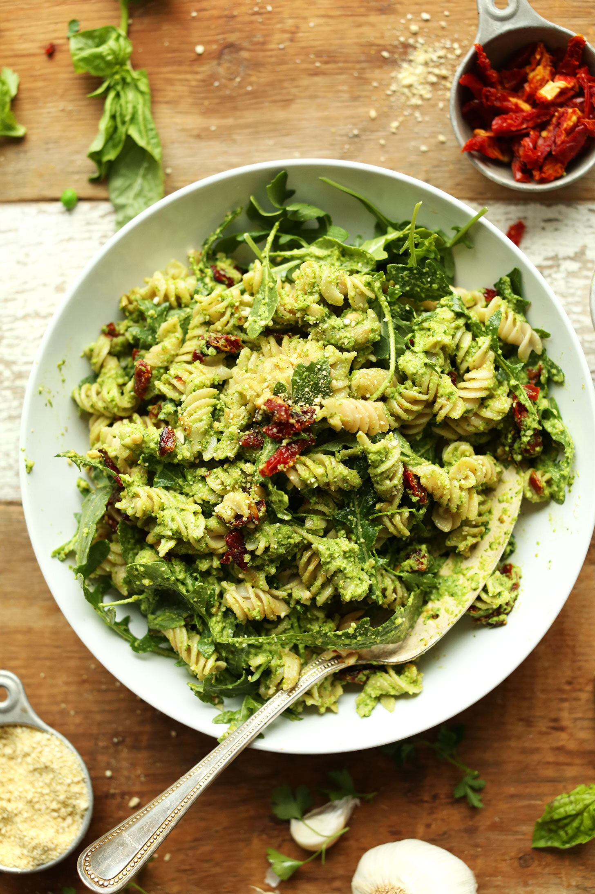

All Eyes On... [8]

All Eyes On: the edition in which I profess my obvious massive lady love for minimalistbaker. And thai food. Ain't no shame about it, either.
this thai peanut zucchini noodle dish. refreshing!
this pea pesto pasta with sundried tomatoes. drooool.
these spicy red curry cauliflower wings. so genius.
this thai salad with peanut tempeh. thai food<333
this cauliflower tikka masala. flavorful!
this thai butternut squash red curry. all the curry!
this indulgent chocolate chip skillet cookie. easy enough!
this lower carb peanut butter skillet cookie. peanut buttahhhh.
this vegan chocolate cake with almond butter buttercream. omfg im done.
this vegan tomato "tuna" sushi. vegan tuna what?!?
these rainbow dumplings. soooooo pretty.
[ this is everything I currently have my eyes on. leave any links you’re currently loving, below! ]